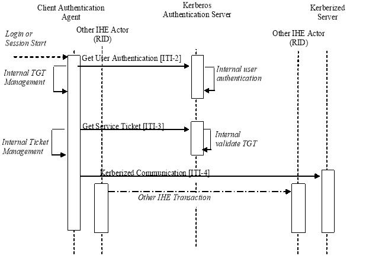

IHE IT Infrastructure (ITI)
Technical Framework
Volume 1
Revision 16.0 – Final Text
Enterprise User Authentication Profile (EUA) – This defines a means to establish one name per user that can then be used on all of the devices and software that participate in this integration profile. It greatly facilitates centralized user authentication management and provides users with the convenience and speed of a single sign-on. This profile leverages Kerberos (RFC1510) and the HL7 CCOW standard (user subject). User authentication is a necessary step for most application and data access operations and it is a workflow improvement for the users. The IHE EUA Profile adds value to the CCOW specification for the user subject by specifying the user subject and CCOW user subject suffix. This profile does not address security features such as audit trails, access control, authorization management and PKI. Future profiles will be developed to address these security features in a manner complementary to this EUA Profile.
The environment is assumed to be a single enterprise, governed by a single security policy and having a common network domain. Unsecured domains -- in particular, Internet access -- are of interest, but not in the scope of this profile. Considerations for applications such as telemedicine and patient remote access to healthcare data are therefore also not in its scope. See ITI TF-1: Appendix G.
Node and machine authentication is specified in the Audit Trail and Node Authentication (ATNA) Profile and is not part of this profile.
A number of transactions used in this profile conform to the Kerberos v5 standard, defined in RFC1510. This standard has been stable since 1993, is widely implemented on current operating system platforms, has successfully withstood attacks in its 10-year history, and is fully interoperable among platforms. For example, Sun Solaris, Linux, AIX, HPUX, IBM-z/OS, IBM-OS400, Novell, MAC OS X, and Microsoft Windows 2000/XP all implement Kerberos in an interoperable manner. This is not a complete list; many other vendors also support Kerberos.
For additional detailed information on Kerberos, beyond what is specified in this profile, we suggest these references:
Kerberos implementations are widely available worldwide. Kerberos does include cryptography that may have restricted use laws in some countries. The US export regulations can be found at . http://www.bxa.doc.gov/Encryption
Figure 4.1-1 shows the actors directly involved in the Enterprise User Authentication Profile and the relevant transactions between them. The box labeled "Other IHE Actor" represents actors from other integration profiles that are meant to be grouped with the nearby actor from within this profile. Other actors that may be indirectly involved due to their use of authentication, etc. are not shown.

Figure 4.1-1: Enterprise Authentication Actor Diagram
Table 4.1-1 lists the transactions for each actor directly involved in the Enterprise User Authentication Profile. In order to claim support of this Integration Profile, an implementation must perform the required transactions (labeled “R”). Transactions labeled "O" are optional. A complete list of options defined in this Integration Profile and that implementations may choose to support is listed in Section 4.2.
Table 4.1-1: Enterprise User Authentication Profile - Actors and Transactions
| Actors | Transactions | Optionality | Section |
| Kerberos Authentication Server | Get User Authentication [ITI-2] | R | ITI TF-2a: 3.2 |
| Get Service Ticket [ITI-3] | R | ITI TF-2a: 3.3 | |
| Client Authentication Agent | Get User Authentication [ITI-2] | R | ITI TF-2a: 3.2 |
| Get Service Ticket [ITI-3] | R | ITI TF-2a: 3.3 | |
| Kerberized Communication [ITI-4] | R | ITI TF-2a: 3.4 | |
| Join Context [ITI-5] | O [Note1] | ITI TF-2a: 3.5 | |
| Change Context [ITI-6] | O [Note1] | ITI TF-2a: 3.6 | |
| Leave Context [ITI-7] | O [Note1] | ITI TF-2a: 3.7 | |
| Kerberized Server | Kerberized Communication [ITI-4] | R | ITI TF-2a: 3.4 |
| User Context Participant | Join Context [ITI-5] | R | ITI TF-2a: 3.5 |
| Follow Context [ITI-13] | R | ITI TF-2a: 3.13 | |
| Leave Context [ITI-7] | R | ITI TF-2a: 3.7 | |
| Context Manager | Join Context [ITI-5] | R | ITI TF-2a: 3.5 |
| Follow Context [ITI-13] | R | ITI TF-2a: 3.13 | |
| Leave Context [ITI-7] | R | ITI TF-2a: 3.7 | |
| Change Context [ITI-6] | R | ITI TF-2a: 3.6 |
Note 1: When the Authentication for User Context Option is supported, then the transaction is required.
CCOW facilitates the sharing of the identity of a EUA authentication user but does not provide for the authentication of users. In order for the Context Manager and User Context Participant to participate in the EUA Profile it is required that the Client Authentication Agent supports the Authentication for User Option. This design provides the User Context Participant with a consistent and enterprise recognized user identity, but does not define access to the Kerberos credentials. Future IHE profiles may address this limitation. Note that the Client Authentication Agent is the key actor when PSA and EUA are combined. See the use case outlined in Section 4.3.2. Applications that implement both the Client Authentication Agent and the User Context Participant shall support configurations where either actor is disabled.
In any single user environment, there shall be only one Client Authentication Agent for one user. In a multi-user environment there shall not be more than one Client Authentication Agent per user.
Options that may be selected for this Integration Profile are listed in Table 4.2-1 along with the Actors to which they apply. Dependencies between options when applicable are specified in notes.
Table 4.2-1: Enterprise User Authentication - Actors and Options
| Actor | Options | Vol. & Section |
| Kerberos Authentication Server | No options defined | - - |
| Client Authentication Agent | Authentication for User Context | ITI TF-2a: 3.6 |
| Kerberized Server | No options defined | - - |
| Context Manager | No options defined | - - |
| User Context Participant | No options defined | - - |
The following diagram describes the sequence of events in the use of Enterprise User Authentication:
Figure 4.3.1-1: Basic Process Flow in Enterprise User Authentication Profile
The sequence of events in the use of Enterprise User Authentication is:
A Kerberized Communication is a Kerberos data exchange that is integrated into another protocol, such as HL7 or DICOM, which is used in another IHE transaction. The details of Kerberization vary and are described separately for the protocols that have been Kerberized. The Kerberization enables the other IHE Actors involved in the other transaction to use the identity of the authenticated user for purposes such as user authorization or audit messages.
The Client Authentication Agent also maintains an internal cache of credentials such as the TGT and service tickets. It renews the tickets as necessary to deal with ticket expirations, re-uses tickets while they are still valid, and removes credentials from the cache when the user session ends. The Client Authentication Agent shall make the Kerberos credentials available using the local operating system mechanisms. Other IHE Actors that need the Kerberos credentials are strongly encouraged to obtain them using the local operating system mechanisms. Operating system support for ticket management has been implemented and has been defined for various operating systems.
In this use case an application supporting user authentication on the same desktop as another application is synchronized to the same user identity, thus giving the user a single-sign-on experience.
The following diagram describes the sequence of events in the use of User Authentication with User Synchronized Applications:

Figure 4.3.2-1: Process Flow with User Synchronized Applications
The sequence of events of the User Authentication with User Synchronized Applications is:
The use model in the clinical environment can be characterized as multiple clinicians using the same workstation for short intervals of time many times a day. In this shared workstation environment, the user requires quick access to the patient data contained in the applications. Traditional methods of logging in and out of the workstation at the operating system or network level can take too long and typically force the applications to terminate. This means that the application clients will potentially need to initialize and establish new database connections, introducing further delay to the Clinician access to patient data. The CCOW standard and more specifically the “user” subject provides a means in combination with the Enterprise Authenticator to allow the user to authenticate at the application level and have all of the other applications tune to the new user.
The following diagram describes the sequence of events in the case of Fast User Switching with Multiple Applications:
 Figure 4.3.3-1: Fast User Switching when using Multiple Applications
Figure 4.3.3-1: Fast User Switching when using Multiple Applications
The process flow would be similar to the following:
Clinician A launches and authenticates via an application containing the Client Authentication Agent (refer to Figure 4.3.3-1 for details). This actor joins the context session and performs a context change to set Clinician A as the user in context.
Clinician A launches the clinical data repository application, containing a User Context Participant Actor, depicted as User Context Participant 1. The actor joins the context session, gets the current user from the Context Manager, and logs clinician A into the application.
Clinician A launches a cardiology application, containing a User Context Participant Actor, depicted as User Context Participant 2. The actor joins the context session, gets the current user from the Context Manager, and logs clinician A into the application.
Clinician A does his job and then gets called away and leaves the workstation.
Clinician B approaches the workstation and authenticates using the Client Authentication Agent. This results in a context change from Clinician A to Clinician B being set in context without the delay typically associated with a logout and login at the operating system level. The clinical data repository and the cardiology application are notified of the context change by the Context Manager resulting in Clinician A being logged out of both applications and Clinician B being logged into both applications.
Clinician B does his job and then closes the clinical data repository application, which leaves the context prior to terminating the application.
Clinician B is finished reviewing patient data within the cardiology application and logs out using the Client Authentication Agent. This forces a context change to remove the current user from the context, which results in the user being logged out of the cardiology application.